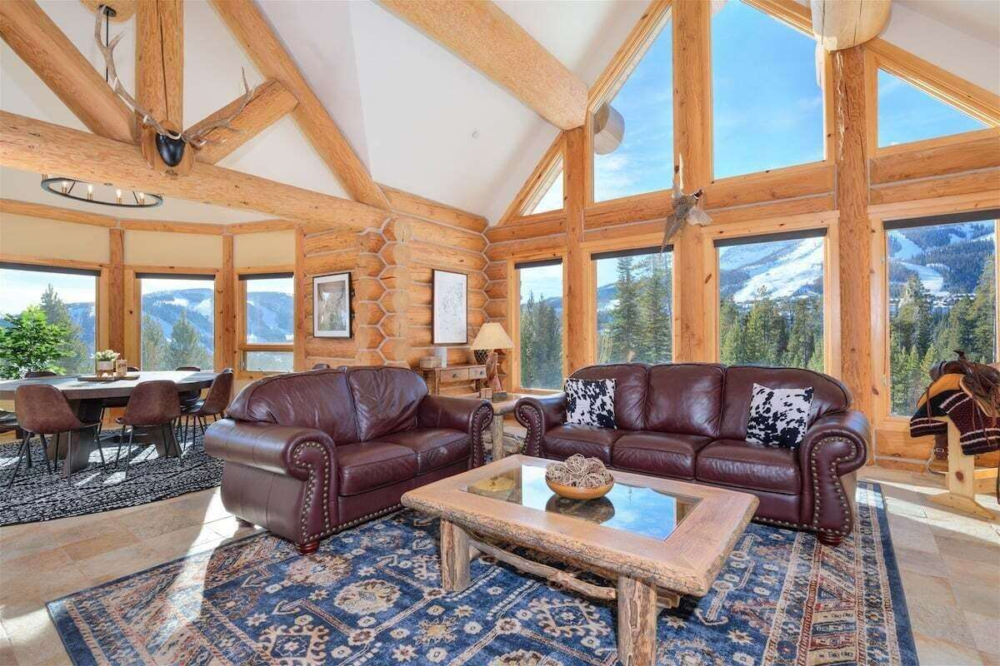
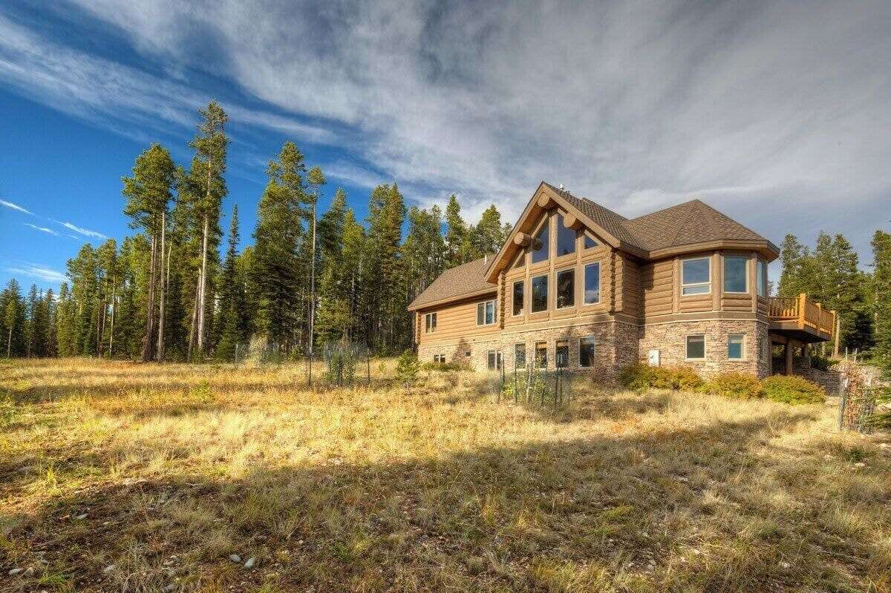
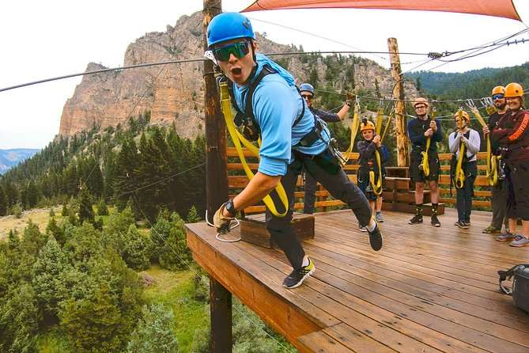
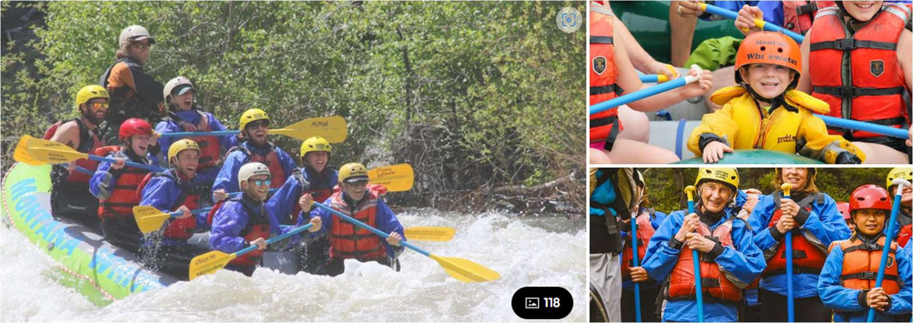
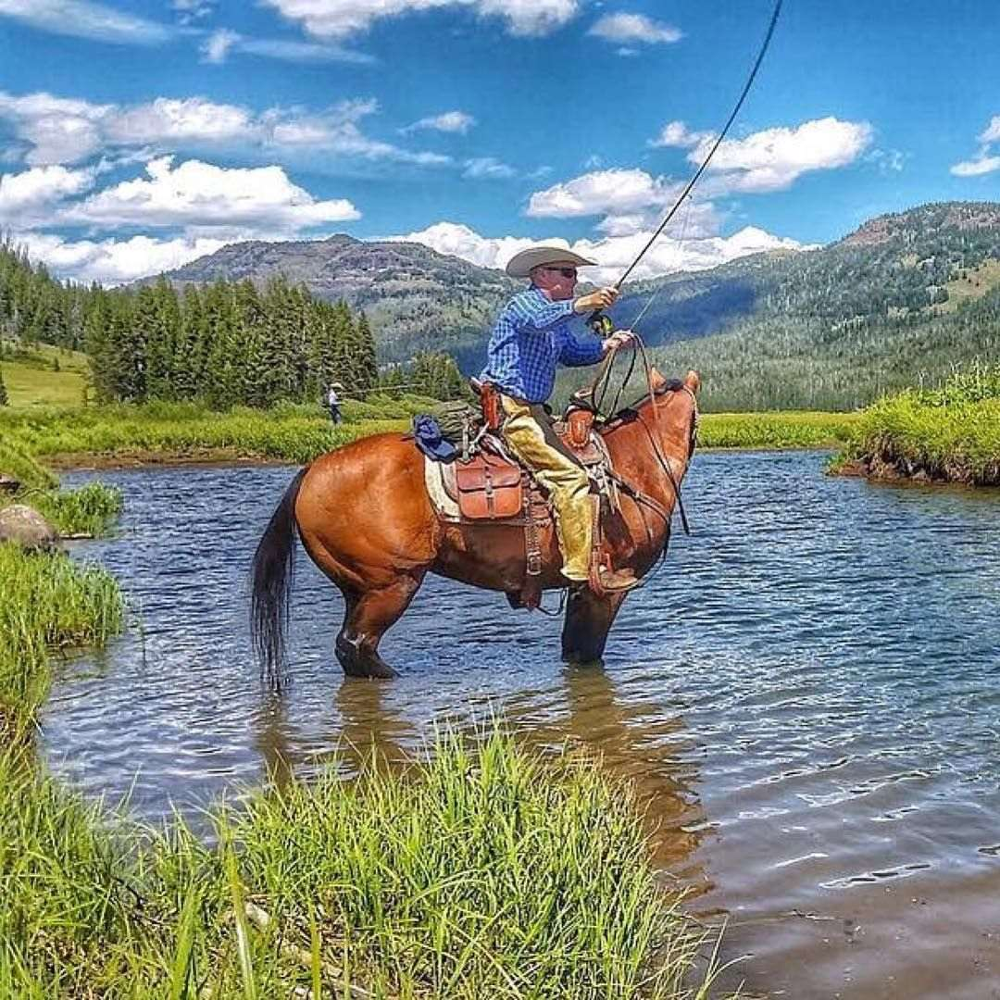

Location: Big Sky, Montana
Dates: July 6–11, 2025
July 6: DFW ➡ Bozeman (BZN), AA 952 @ 8:00 AM — Arrive 10:09 AM
July 11: Bozeman (BZN) ➡ DFW, AA 947 @ 3:58 PM — Arrive 8:00 PM
Seats: 18E/F, 19D/E/F
Address: 3 Swift Bear Rd, Big Sky, MT 59716
View VRBO Listing
This luxury VRBO offers mountain views, plenty of space, multiple bedrooms and bathrooms, and an ideal base for all our activities.
 Montana Grizzly Encounter: A rescue sanctuary offering up-close views of grizzly bears in a safe, naturalistic environment. Perfect for families, with educational signage and photo ops. It’s a great ~45-minute stop on your way to or from Big Sky. Visit site
Gallatin County Pioneer Museum: Explore local history through pioneer-era exhibits, housed in the old county jail. Visit site
MacKenzie River Pizza Lodge: Cozy, family-style lodge with hearty pizzas and Montana-inspired ambiance. Visit site
Sweet Peaks Ice Cream: Handmade, locally sourced ice cream—a perfect post-travel treat. Visit site
Treeline Coffee Roasters: Mountain-born and women-owned—great coffee and pastries in a bright café. Visit site
Bozeman Hot Springs: Relax in 9–12 pools (indoors/outdoors, 59–106°F) with saunas and live music cues. Visit site
Bunkhouse Brewery (Four Corners): Casual evening spot with craft beers, peanuts, and live events like open-mic and trivia. Visit site
VIP Private Yellowstone Tour: Visit Grand Prismatic Spring, Fountain Paint Pot, Firehole Lake Drive, and Firehole Canyon Drive. Includes gourmet picnic lunch, spotting scopes, binoculars, and take-home wildlife video. Entry fees, gratuities, and a personalized family-friendly guide experience are all included. View tour
📝 Submit your Yellowstone lunch order here
Gallatin River Ziplining: Ascend sky bridges ~55 ft high, then fly across the Gallatin River with sweeping views of limestone cliffs and pine forests. Choose between Classic (3 zips, 3 bridges) or Super Zip (adds swinging bridges & cargo net climb). Moderate fitness required. Book Zipline
Gallatin River Whitewater Rafting: Paddle through continuous whitewater in Gallatin National Forest. Includes wetsuit, booties, splash top, helmet, and paddle. Family-friendly (ages ~6+). Moderate fitness needed. Book Rafting
Horseback + Fishing Trip: Ride horseback into remote alpine lakes/streams. Fly-fishing for native cutthroat, grayling, and rainbows. Includes wrangler guide and fishing guide. ~$400 per person. Moderate fitness required. View outfitter
